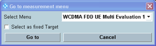

When using the WCDMA signaling application and a WCDMA measurement in parallel, it is recommended to use a shortcut softkey to switch to the measurement.
These softkeys ensure that the measurement is configured compatible with the settings of the signaling application. When you use the softkeys to switch to the "TX Measurements", the combined signal path scenario is activated automatically in the measurement.
- The measurement and the signaling application can be used in parallel, i.e. both DL signal transmission and measurement can be switched on.
- The signaling RF settings are also used for the measurement.
- The "UE Signal Info" settings of the measurement are configured compatible with the signaling application.
- Additional softkeys and hotkeys are displayed in the measurement, so that the signaling application can be controlled and configured from the measurement.
If the softkey label equals "Go to...", the softkey opens a dialog box with a list of all available WCDMA measurements. If the softkey label indicates a measurement name, this measurement has been assigned to the softkey as fixed target, see "Select as fixed Target".
Three shortcut softkeys are available and can be set to different fixed targets.

Selects the target measurement you want to switch to.
Sets the selected measurement as fixed target of the softkey. The softkey label indicates the measurement name and switches directly to the selected target without opening the dialog box.
When the dialog box has been disabled, you can still change the target measurement or re-enable the dialog box using the configuration menu, see "Shortcut Configuration".
Press "Go to" switch to the selected measurement or "Cancel" to abort.